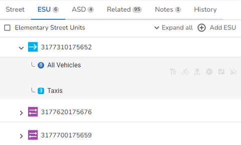

England & Wales only
Highway Dedication records are attached to an ESU. First you need to find the street that the ESU whose Highway Dedication you wish to maintain has been assigned to. You can use the Search to search for the street. Either select the street from the search results or press enter in the search and select the street from the Explorer to open the Street form where the street details will be displayed.
•Select the ESU tab and all the ESUs assigned to the street are displayed. Note: You can click Expand all to show all of the ESUs and associated records, or just click on an ESU to show the records associated with that ESU.

•Select the ESU whose Highway Dedications you wish to maintain.
Add a Highway Dedication
•Select to Add a Highway Dedication from one of the Highway Dedication Actions.
•The Highway Dedication is configured with the Highway Dedication defaults from the Street template.
•Complete the Highway Dedication details.
•Once you are happy, click OK to validate your entry.
•Now click Save to update the street.
Edit a Highway Dedication
•Select the Highway Dedication you wish to edit.
•Change the Highway Dedication details as required.
•When you are happy, click OK to validate your changes.
•Now click Save to update the street.
Delete a Highway Dedication
•Select the Highway Dedication you wish to delete.
•Select to Delete Highway Dedication from one of the Highway Dedication Actions.
•You will see a confirmation dialog letting you know what will be deleted if you continue e.g.
•Click  to delete and the Highway Dedication will be removed from the ESU or click CANCEL to return without deleting.
to delete and the Highway Dedication will be removed from the ESU or click CANCEL to return without deleting.
•Now click Save to update the street.